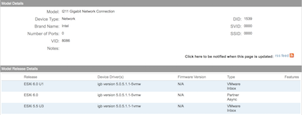
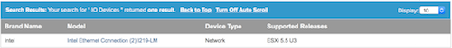

検証環境構築での出来事です.作業記録として残しておきます.
検証用の機材として、
最近、shuttleが出したDH170というべアボーンを購入しました. 以下、他に購入したもの
よし、Esxiをインストールして、検証しよう！！.....として出来なかった(´･ω･・`)
まず、、起動しない(´；ω；`)
凡庸ドライバー？をisoに組み込んでインストールすれば、起動するらしいという記事をみて、トライ！
起動し、一応動くようにはなったがNICがGigabitで認識されてない！？
それにこのべアボーンキット、Intel i211+i219LM デュアルLAN 元々、intelのNICが二つ、ついてるんです.
でも、一つしか見えない(ρд-)
ここから、試行錯誤、四苦八苦して正当法？でうまくいきました。それを紹介します。
１. VMware社が出してるサイトを目を皿のようにして読み込み、実行する
２. 次に１のVMware 互換性ガイドから手に入れた情報を検索する(What are you looking for:の隣をIO devicesに)
さて、ここでボクが検索して出てきた情報はこれだった.


ふむぅ、２つのNICを認識してくれるのは5.5U3だけだった(´･ω･`)
とりあえず、5.5U3をインストールすると...お？普通に起動した。
が、しかし...?
NICが１つしか認識されてなかった。でも、Gigabit、全二重でちゃんと認識されてて嬉しい(〃^∇^)o☆
あと、一つ、めげずに頑張った.そこで一つのサイトを見つけた.
このサイトの
i211がない場合
esxclxcli software acceptance set --level=CommunitySupported
esxcli network firewall ruleset set -e true -r httpClient
esxcli software vib install -n net-igb -d https://vibsdepot.v-front.de
i219LMがない場合
esxcli network firewall ruleset set -e true -r httpClient
esxcli software profile update -d https://hostupdate.vmware.com/software/VUM/PRODUCTION/main/vmw-depot-index.xml -p ESXi-5.5.0-20151004001-standard
を打ち、Esxiをリブートしたら、無事２つのNICが認識された.
よかった(´∀`)検証前の段階に大分、悩み時間をかけてしまった...
たぶん、調べ方とかは参考になるので、どうぞ